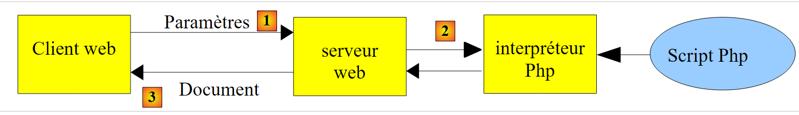
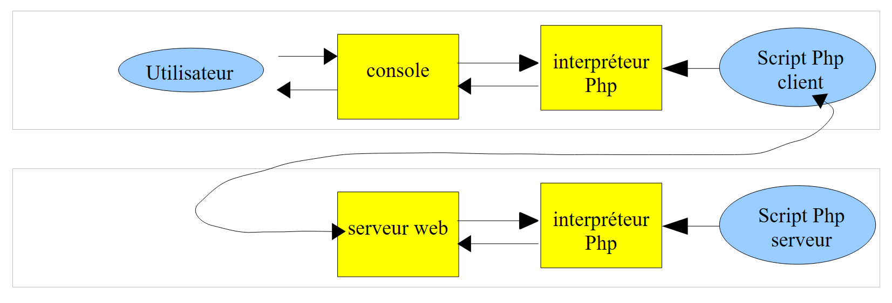
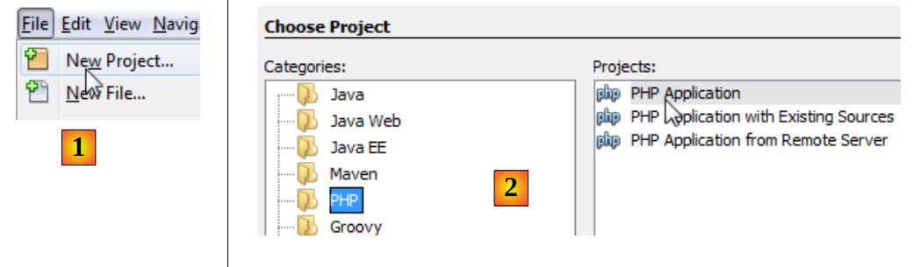
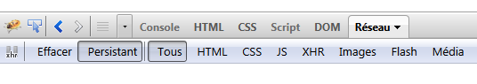
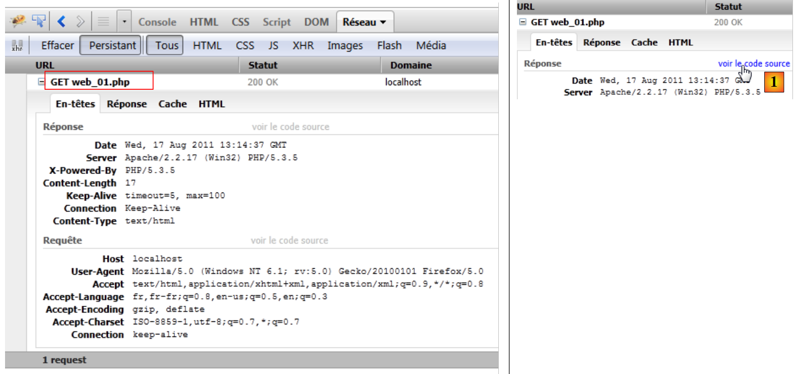
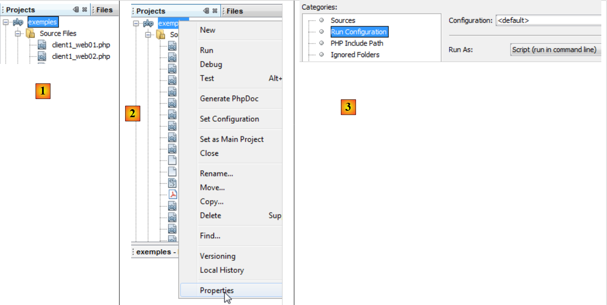

10. Servidores em PHP
Uma vez que os programas PHP podem ser executados por um servidor WEB, um programa deste tipo torna-se um programa servidor capaz de servir vários clientes. Do ponto de vista do cliente, chamar um serviço WEB equivale a solicitar o URL desse serviço. O cliente pode ser escrito em qualquer linguagem, nomeadamente em PHP. Neste último caso, utilizam-se então as funções de rede que acabámos de ver. Além disso, é necessário saber «comunicar» com um serviço WEB, ou seja, compreender o protocolo http de comunicação entre um servidor Web e os seus clientes. É esse o objetivo dos programas que se seguem.
O cliente Web descrito no parágrafo 9.2 permitiu-nos descobrir uma parte do protocolo HTTP.

Na sua versão mais simples, as trocas cliente/servidor são as seguintes:
- o cliente estabelece uma ligação com a porta 80 do servidor Web
- envia um pedido relativo a um documento
- o servidor web envia o documento solicitado e encerra a ligação
- o cliente, por sua vez, encerra a ligação
O cliente pode assumir diversas formas: um texto no formato HTML, uma imagem, um vídeo, etc. Pode tratar-se de um documento existente (documento estático) ou de um documento gerado dinamicamente por um script (documento dinâmico). Neste último caso, fala-se de programação web. O script de geração dinâmica de documentos pode ser escrito em várias linguagens: PHP, Python, Perl, Java, Ruby, C#, VB.net, ...
Utilizamos aqui o PHP para gerar dinamicamente documentos de texto.
 |
- em [1], o cliente estabelece uma ligação com o servidor, solicita um script PHP e, consoante o caso, envia ou não parâmetros para esse script
- No [2], o servidor web faz com que o script PHP seja executado pelo interpretador PHP. Este script gera um documento que é enviado ao cliente [3]
- o servidor encerra a ligação. O cliente faz o mesmo.
O servidor web pode processar vários clientes ao mesmo tempo. Com o pacote de software WampServer, o servidor web é um servidor Apache, um servidor de código aberto da Apache Foundation (http://www.apache.org/). Nas aplicações que se seguem, o WampServer deve ser iniciado. Isto ativa três programas: o servidor web Apache, o SGBD MySQL e o interpretador PHP.
Os scripts executados pelo servidor web serão escritos com a ferramenta NetBeans. Até agora, escrevemos scripts PHP executados num contexto de consola:
 |
O utilizador utiliza a consola para solicitar a execução de um script PHP e receber os resultados.
Nas aplicações cliente/servidor que se seguem,
- o script do cliente é executado num contexto de consola
- o script do servidor é executado num contexto web
 |
O script PHP do servidor não pode estar em qualquer local do sistema de ficheiros. Com efeito, o servidor web procura, nos locais especificados pela configuração, os documentos estáticos e dinâmicos que lhe são solicitados. A configuração por predefinição do WampServer faz com que os documentos sejam procurados na pasta <WampServer>/www, em que <WampServer> é a pasta de instalação do WampServer. Assim, se um cliente web solicitar um documento D com o URL [http://localhost/D], o servidor web fornecer-lhe-á o documento D com o caminho [<WampServer>/www/D].
Nos exemplos que se seguem, colocaremos os scripts do servidor na pasta [www/exemples-web]. Se um script do servidor se chamar S.php, será solicitado ao servidor web com o URL [http://localhost/exemples-web/S.php]. Será então apresentado o documento [<WampServer>/www/exemples-web/S.php].
 |
Para criar um script de servidor com o NetBeans para o , procederemos da seguinte forma:
 |
- em [1], criamos um novo projeto
- em [2], selecionamos a categoria [PHP] e o projeto [PHP Application]
 |
- em [3], atribuímos um nome ao projeto
- em [4], escolhemos uma pasta para o projeto
- em [5], indicamos que o script deve ser executado por um servidor web local (o URL do script terá o formato http://localhost/...). O servidor web local será o servidor web Apache de WampServer.
- No [6], indicamos o URL do projeto. Aqui, decidimos que um script S.php do projeto será solicitado com o URL e o [http://localhost/exemples-web/S.php]. De acordo com o que foi referido, isto significa que o caminho do script S.php no sistema de ficheiros será [<WampServer>/www/exemples-web/S.php]. É isso que está indicado em [7]. Solicitamos aqui que todos os scripts S.php do projeto sejam copiados para a árvore de diretórios do servidor web Apache.
- em [8], o novo projeto.
Vamos escrever um script de teste:
 |
- em [1], criamos no projeto [exemples-web] um primeiro script PHP
- em [2], atribuímos-lhe um nome
- em [3], depois de o criarmos, atribuímos-lhe o seguinte conteúdo
Para continuar, é necessário que o WampServer seja executado.
 |
- em [4], executamos o script web [exemple1.php]. O NetBeans irá então iniciar o navegador predefinido do computador e solicitar-lhe que exiba o URL, [http://localhost/exemples-web/exemple1.php] e [5]
- em [6]; o navegador exibe o que o script do servidor escreveu para o cliente.
Posteriormente, iremos deparar-nos com dois tipos de clientes web:
- um navegador como o descrito acima. Referimos que o servidor web enviava uma resposta com o seguinte formato: cabeçalhos HTTP, linha vazia, texto. O navegador apresenta apenas texte.
- um script PHP que lhe exibirá a resposta completa: cabeçalhos HTTP, linha vazia, texto.
A seguir,
- os scripts de servidor serão escritos como o [exemple1.php] acima
- os scripts do cliente serão escritos da mesma forma que os scripts de consola que escrevemos até agora.
10.1. Aplicação cliente/servidor de data/hora
10.1.1. O servidor (web_01)
<?php
// hora: número de milissegundos desde 01/01/1970
// formato de exibição da data e hora
// d: dia com 2 dígitos
// m: mês com 2 dígitos
// y: ano com 2 dígitos
// H: hora 0,23
// i: minutos
// s: segundos
print date("d/m/y H:i:s",time());
Basicamente, o script PHP acima exibe a hora atual no ecrã. No entanto, quando executado por um servidor web, o fluxo n.º 1, que normalmente está associado ao ecrã, é redirecionado para a ligação que liga o servidor ao seu cliente. Assim, num contexto web, o script acima envia a hora atual na forma de texto para o cliente.
Vamos executar este script no NetBeans:
 |
- em [1], executa-se o script. É então iniciado um navegador web.
- em [2], o URL solicitado pelo navegador da Web
- em [3], o texto enviado pelo script do servidor
O navegador do cliente utiliza o protocolo HTTP para comunicar com o servidor web. Já descrevemos a estrutura deste protocolo.
O cliente envia linhas de texto que podem ser divididas em três partes: cabeçalhos HTTP, linha vazia e documento. O documento enviado ao servidor web está, na maioria das vezes, vazio ou consiste num conjunto de parâmetros parami=vali, em que vali é um valor introduzido pelo utilizador num formulário HTML.
A resposta do servidor tem o mesmo formato: cabeçalhos HTTP, linha vazia, documento, em que document é, desta vez, o documento solicitado pelo navegador do cliente. Se o cliente tiver transmitido parâmetros, o documento entregue depende, geralmente, desses parâmetros.
Com o navegador Firefox, é possível descobrir as trocas reais entre o cliente e o servidor web. Existe um plugin para o Firefox, chamado Firebug, que permite rastrear essas trocas. O Firebug está disponível no URL [https://addons.mozilla.org/fr/firefox/addon/firebug/]. Se utilizarmos o navegador Firefox para visitar esta URL, podemos então descarregar o plugin Firebug. Partimos do princípio, a seguir, que o plugin Firebug foi descarregado e instalado. Está disponível através de uma opção do menu do Firefox:
 |
Abre-se uma janela do Firebug na janela do navegador Firefox. Esta janela apresenta, por sua vez, um menu:
 |
Para analisar as trocas de dados entre o cliente e o servidor durante uma solicitação HTTP, efetuamos a solicitação URL [http://localhost/exemples-web/web_01.php] utilizando o navegador Firefox. A janela do Firebug é então preenchida com informações:
 |
Acima, temos um resumo das trocas cliente/servidor:
- [1]: o cliente enviou o comando HTTP: GET /exemplos-web/web_01.php HTTP/1.1 para solicitar o documento [web01.php]
- [2]: o servidor enviou a resposta: HTTP/1.1 200 OK, indicando que encontrou o documento solicitado.
O Firebug permite obter as trocas completas. Basta «desdobrar» o URL:
 |
Vemos acima os cabeçalhos HTTP trocados entre o cliente (Pedido) e o servidor (Resposta). É possível obter o código-fonte das trocas, c.a.d, e as linhas de texto efetivamente trocadas, [1]. Obtemos então o seguinte código-fonte:
 |
Para escrever um script de cliente do servidor web, basta reproduzir o comportamento do navegador. Depois de estabelecer uma ligação com o servidor, o script de cliente poderia enviar as 8 linhas da solicitação acima. Na verdade, nem tudo é indispensável e enviaremos apenas as três linhas seguintes:
- linha 1: especifica o documento solicitado e o protocolo HTTP utilizado
- linha 2: indica o nome do computador do script do cliente
- linha 3: indica que, após a troca de dados, o cliente encerrará a ligação ao servidor
Vejamos agora a resposta do servidor. Sabemos que foi gerada pelo script PHP [web_01.php]. Acima, vemos os cabeçalhos HTTP da resposta. O código do script [web01.php] mostra que não foi ele que os gerou. Recordemos a configuração do script do servidor:
 |
Foi o servidor web que gerou os cabeçalhos HTTP da resposta. O script do servidor pode gerá-los por si próprio. Veremos um exemplo disso um pouco mais adiante.
Já referimos que a resposta do servidor web tinha o seguinte formato: cabeçalhos HTTP, linha em branco, documento. Se o documento for um documento de texto, é possível visualizá-lo no separador [Réponse] do Firebug:
 |
Esta resposta foi gerada pelo script [web_01.php].
10.1.2. Um cliente (client1_web_01)
Vamos agora escrever um script de cliente para o serviço anterior. Sabemos que o cliente deve:
- abrir uma ligação com o servidor web
- enviar o texto: cabeçalhos HTTP, linha vazia
- ler a resposta completa do servidor até que este encerre a sua ligação com o cliente
- fechar a ligação com o servidor
O script do cliente é executado num ambiente de consola do NetBeans:
 |
- em [1], o script do cliente [client1_web_01.php] está incluído no projeto NetBeans [exemples]
- em [2], as propriedades do projeto NetBeans [exemples]
- em [3], o projeto NetBeans [exemples] é executado no modo «linha de comandos», ao qual também chamamos de modo «consola».
O código do script do cliente é o seguinte:
<?php
// dados
$HOTE = "localhost";
$PORT = 80;
$urlServeur = "/exemples-web/web_01.php";
// abertura de uma ligação na porta 80 do $HOTE
$connexion = fsockopen($HOTE, $PORT);
// erro?
if (!$connexion) {
print "Erreur : $erreur\n";
exit;
}
// os cabeçalhos (headers) do protocolo HTTP devem terminar com uma linha em branco
// GET
fputs($connexion, "GET $urlServeur HTTP/1.1\n");
// Host
fputs($connexion, "Host: localhost\n");
// Conexão
fputs($connexion,"Connection: close\n");
// linha vazia
fputs($connexion,"\n");
// o servidor vai agora responder no canal $connexion. Vai enviar todos
// os seus dados e, em seguida, encerrará o canal. O cliente lê, portanto, tudo o que chega de $connexion
// até ao encerramento do canal
while ($ligne = fgets($connexion, 1000)) {
print "$ligne";
}//enquanto
// o cliente, por sua vez, encerra a ligação
fclose($connexion);
// fim
exit;
Comentários
- linha 8: abertura de uma ligação ao servidor
- linha 16: comando HTTP GET
- linha 18: comando HTTP Host
- linha 20: comando HTTP Conexão
- linha 22: linha vazia
- linhas 26-28: leitura de todas as linhas de texto enviadas pelo servidor até este encerrar a ligação.
- linha 30: o cliente, por sua vez, encerra a ligação
Resultados
A execução do script do cliente produz os seguintes resultados:
Comentários
- linhas 1-7: a resposta HTTP do servidor web.
- linha 8: a linha vazia que indica o fim dos cabeçalhos HTTP
- linhas 9 e seguintes: o documento. Neste caso, trata-se de um texto simples que representa a data e a hora atuais. É o texto escrito pelo script PHP na saída n.º 1.
- linha 1: o servidor responde que encontrou o documento solicitado.
- linha 2: data e hora atuais do servidor
- linha 3: identidade do servidor web
- linha 4: indica que o documento que se segue é um documento gerado por um script PHP
- linha 5: número de caracteres do documento
- linha 6: o servidor indica que, após enviar o documento, irá encerrar a ligação
- linha 7: indica que o documento enviado pelo servidor é um texto no formato HTML. Isto está incorreto neste caso. O documento é texto sem qualquer formatação específica. Quando o documento não é texto no formato HTML, cabe ao script PHP indicá-lo. Não o fizemos aqui.
10.1.3. Um segundo cliente (client2_web_01)
O cliente anterior exibia tudo o que o servidor web lhe enviava. Na prática, geralmente ignoram-se os cabeçalhos HTTP da resposta e aproveita-se a parte do documento. Procuramos aqui recuperar a data e a hora enviadas pelo script do servidor PHP. Vamos recuperar estas informações através de uma expressão regular.
<?php
// recuperar as informações enviadas por um servidor web
// dados
$HOTE = "localhost";
$PORT = 80;
$urlServeur = "/exemples-web/web_01.php";
// abertura de uma ligação na porta 80 do $HOTE
$connexion = fsockopen($HOTE, $PORT);
// erro?
if (!$connexion) {
print "Erreur : $erreur\n";
exit;
}
// os cabeçalhos (headers) do protocolo HTTP devem terminar com uma linha em branco
// GET
fputs($connexion, "GET $urlServeur HTTP/1.1\n");
// Host
fputs($connexion, "Host: localhost\n");
// Conexão
fputs($connexion,"Connection: close\n");
// linha vazia
fputs($connexion,"\n");
// o servidor vai agora responder no canal $connexion. Vai enviar todos
// estes dados e, em seguida, encerrará o canal. O cliente lê, portanto, tudo o que chega de $connexion
// até encontrar a linha que procura, com o formato dd/mm/aa hh:mm:ss
while ($ligne = fgets($connexion, 1000)) {
print "$ligne";
if (preg_match("/(\d\d)\/(\d\d)\/(\d\d) (\d\d):(\d\d):(\d\d)/", $ligne, $champs)) {
// e recuperam-se os # campos
array_shift($champs); // remove-se o primeiro elemento da matriz de campos
// recuperam-se os 6 campos em 6 variáveis
list($j, $m, $a, $h, $i, $s) = $champs;
// exibição do resultado
print "\ndateheure=[$j,$m,$a,$h,$i,$s]\n";
}//if
}//enquanto
// o cliente encerra a ligação por sua vez
fclose($connexion);
// fim
exit;
Resultados
10.2. Recuperação pelo servidor dos parâmetros enviados pelo cliente
No protocolo HTTP, um cliente dispõe de dois métodos para passar parâmetros ao servidor Web:
- solicita o serviço URL na forma
GET url?param1=val1¶m2=val2¶m3=val3… HTTP/1.0
onde os valores vali têm de ser previamente codificados para que determinados caracteres reservados sejam substituídos pelo seu valor hexadecimal.
- solicita o URL do serviço na forma
POST url HTTP/1.0
e, em seguida, entre os cabeçalhos HTTP enviados ao servidor, insere o seguinte cabeçalho:
O restante dos cabeçalhos enviados pelo cliente termina com uma linha vazia. Pode então enviar os seus dados na forma
onde os valores vali devem, tal como no método GET, ser previamente codificados. O número de caracteres enviados ao servidor deve ser N, sendo N o valor declarado no cabeçalho
O script PHP, que recupera os parâmetros parami anteriormente enviados pelo cliente, obtém os seus valores na tabela:
- $_GET["parami"] para um comando GET
- $_POST["parami"] para um comando POST
10.2.1. O cliente GET (client1_web_02)
O script PHP abaixo envia três parâmetros [nom, prenom, age] para o servidor.
<?php
// cliente: envia nome próprio, apelido e idade para o servidor através do método GET
// dados
$HOTE = "localhost";
$PORT = 80;
$URL = "/exemples-web/web_02.php";
list($prenom, $nom, $age) = array("jean-paul", "de la hûche", 45);
// ligação ao servidor web
$connexion = fsockopen($HOTE, $PORT);
// retorno em caso de erro
if (!$connexion) {
print "Echec de la connexion au site ($HOTE,$PORT) : $erreur";
exit;
}//if
// envio das informações para o servidor PHP
// codificação das informações
$infos = "prenom=" . urlencode(utf8_decode($prenom)) . "&nom=" . urlencode(utf8_decode($nom)) . "&age=" . urlencode("$age");
// monitorização da consola
print "infos envoyées au serveur (GET)=$infos\n";
print "URL demandée=[$URL?$infos]\n\n";
// os cabeçalhos (headers) do protocolo HTTP devem terminar com uma linha em branco
// GET
fputs($connexion, "GET $URL?$infos HTTP/1.1\n");
// Host
fputs($connexion, "Host: localhost\n");
// Ligação
fputs($connexion,"Connection: close\n");
// linha vazia
fputs($connexion,"\n");
// o servidor irá agora responder no canal $connexion. Irá enviar todas
// os seus dados e, em seguida, encerra o canal. O cliente lê tudo o que chega de $connexion até ao encerramento do canal
while ($ligne = fgets($connexion, 1000))
print "$ligne";
// o cliente, por sua vez, encerra a ligação
fclose($connexion);
Comentários
- linha 7: URL do script do servidor
- linha 8: os valores dos 3 parâmetros
- linha 10: abertura de uma ligação com o servidor web
- linha 18: codificação dos 3 parâmetros. Estamos num script escrito no NetBeans com uma codificação de caracteres em UTF-8. Assim, os 3 valores dos parâmetros da linha 8 são codificados em UTF-8. A função utf8_decode converte a sua codificação para ISO-8859-1. Feito isto, podem ser codificados para URL. Todos os caracteres não alfabéticos são substituídos por %xx, em que xx é o valor hexadecimal do caractere. Os espaços, por sua vez, são substituídos pelo sinal +.
- linha 24: o URL solicitado é $URL?$infos, em que $infos tem o formato nom=val1&prenom=val2&age=val3.
10.2.2. O servidor (web_02)
O servidor limita-se a apresentar o que recebe.
<?php
// gestão de erros
ini_set("display_errors", "off");
// recuperação pelo servidor das informações enviadas pelo cliente
// aqui, nome=P&apelido=N&idade=A
// estas informações ficam automaticamente disponíveis nas variáveis
// $_GET['prenom'], $_GET['nom'], $_GET['age']
// são reenviadas ao cliente
// cabeçalho UTF-8
header("Content-Type: text/plain; charset=utf-8");
// parâmetros enviados ao servidor
$prenom = isset($_GET['prenom']) ? $_GET['prenom'] : "";
$nom = isset($_GET['nom']) ? $_GET['nom'] : "";
$age = isset($_GET['age']) ? $_GET['age'] : "";
// resposta ao cliente
$réponse = "informations reçues du client [" .
utf8_encode(htmlspecialchars($prenom, ENT_QUOTES)) .
"," . utf8_encode(htmlspecialchars($nom, ENT_QUOTES)) .
"," . utf8_encode(htmlspecialchars($age, ENT_QUOTES)) . "]\n";
print $réponse;
Comentários
- linha 13: define o cabeçalho «Content-Type» de HTTP. Por predefinição, o servidor web envia o cabeçalho
, que indica que a resposta é texto no formato HTML. Neste caso, a resposta será texto sem formatação, com caracteres codificados em UTF-8:
Os cabeçalhos HTTP devem ser enviados antes da resposta do servidor. Assim, no exemplo acima, a chamada à função header deverá ocorrer antes de qualquer instrução print.
- linhas 16-18: recuperam-se os 3 parâmetros da tabela $_GET.
- linha 21: constrói-se a cadeia de caracteres que será enviada como resposta ao cliente. Alguns caracteres têm significados especiais em HTML e têm de ser substituídos por entidades HTML para serem exibidos. htmlspecialchars($string) substitui todos esses caracteres pelos seus equivalentes na cadeia $string. Por exemplo, o caractere $ torna-se &. Depois, como indicámos na linha 13 que a resposta seria o texto UTF-8, codificamos os valores recuperados em UTF-8.
- linha 25: a resposta é enviada ao cliente
Teste 1
Vamos executar o script [web_02] a partir do NetBeans. É então aberto um navegador para apresentar o URL [http://localhost/exemples-web/web_02.php]:
 |
- em [1], o navegador apresenta o URL [http://localhost/exemples-web/web_02.php]. Como não adicionámos parâmetros ao final desta URL, o servidor respondeu com parâmetros vazios. Recorde-se que a resposta do servidor é a que foi escrita com a instrução print.
- Em [2], acrescentamos parâmetros ao URL. Desta vez, o script do servidor devolve-os corretamente.
Note-se que o NetBeans não é necessário para a execução de um script de servidor. Basta digitar o URL do script de servidor num navegador para que este seja executado.
Teste 2
Executamos no NetBeans o cliente [client1_web_02.php]. Recebemos a seguinte resposta:
- linha 1: codificação dos 3 parâmetros. Vê-se que o carácter û se transformou em %FB.
- linha 12: a resposta do servidor
10.2.3. O cliente POST (client2_web_03)
Um cliente HTTP envia ao servidor web a seguinte sequência de texto: cabeçalhos HTTP, linha vazia, documento. No cliente anterior, esta sequência era a seguinte:
Não havia documento. Existe outra forma de transmitir parâmetros, o método denominado POST. Neste caso, a sequência de texto enviada ao servidor web é a seguinte:
Desta vez, os parâmetros que, no cliente GET, estavam incluídos nos cabeçalhos HTTP, fazem parte, no cliente POST, do documento enviado a seguir aos cabeçalhos.
O script do cliente POST é o seguinte:
<?php
// cliente: envia nome próprio, apelido e idade para o servidor através do método POST
// dados
$HOTE = "localhost";
$PORT = 80;
$URL = "/exemples-web/web_03.php";
list($prenom, $nom, $age) = array("jean-paul", "de la hûche", 45);
// ligação ao servidor web
$connexion = fsockopen($HOTE, $PORT);
// retorno em caso de erro
if (!$connexion) {
print "Echec de la connexion au site ($HOTE,$PORT) : $erreur";
exit;
}//if
// envio das informações para o servidor PHP
// codificação das informações
$infos = "prenom=" . urlencode(utf8_decode($prenom)) . "&nom=" . urlencode(utf8_decode($nom)) . "&age=" . urlencode("$age");
print "client : infos envoyées au serveur (POST) : $infos\n";
// estabelece-se ligação ao URL $URL enviando-lhe (POST) parâmetros
// os cabeçalhos (headers) do protocolo HTTP devem terminar com uma linha em branco
// POST
fputs($connexion, "POST $URL HTTP/1.1\n");
// Host
fputs($connexion, "Host: localhost\n");
// Conexão
fputs($connexion,"Connection: close\n");
// Content-type
fputs($connexion, "Content-type: application/x-www-form-urlencoded\n");
// Content-length
// Envia-se o tamanho (número de caracteres) das informações que vão ser enviadas
fputs($connexion, "Content-length: " . strlen($infos) . "\n");
// Envia-se uma linha vazia
fputs($connexion, "\n");
// envia-se a informação
fputs($connexion, $infos);
// O servidor vai agora responder no canal $connexion. Vai enviar todos
// os seus dados e, em seguida, encerrará o canal. O cliente lê tudo o que chega de $connexion
// até ao encerramento do canal
while ($ligne = fgets($connexion, 1000))
print "$ligne";
// o cliente encerra a ligação por sua vez
fclose($connexion);
Comentários
- linha 7: o URL do serviço web ao qual o cliente POST se vai ligar. Este serviço web será descrito em breve.
- linha 8: os parâmetros a transmitir ao serviço web
- linha 10: ligação ao servidor web
- linha 18: codificação dos parâmetros a enviar ao serviço web
- linha 23: comando HTTP POST
- linha 25: comando HTTP Host
- linha 27: comando HTTP Connection
- linha 29: comando HTTP Content-type. Já nos deparámos com este cabeçalho HTTP. Está presente sempre que um documento é enviado. Um servidor web que envia um documento HTML utiliza o cabeçalho HTTP
Se enviar texto não formatado, utiliza o cabeçalho HTTP
O nosso cliente POST envia um documento que é um texto com o formato param1=val1¶m2=val2&.... Este tipo de documento tem o tipo application/x-www-form-urlencoded. Não explicaremos o motivo, pois isso obrigaria a explicar o que é um formulário web.
- linha 32: comando Content-length. Já nos deparámos com este cabeçalho HTTP. Está presente sempre que um documento é enviado. Indica o número de bytes do documento.
- linha 34: a linha vazia que assinala o fim dos cabeçalhos HTTP
- linha 36: envio dos parâmetros
- linhas 40-41: leitura da resposta completa do servidor
- linha 43: encerramento da ligação
10.2.4. O servidor (web_03)
O serviço web [web_03] faz o mesmo que o serviço web [web_02]. Lê os parâmetros enviados pelo cliente POST e reenvia-os ao cliente. O seu código é o seguinte:
<?php
// gestão de erros
ini_set("display_errors", "off");
// cabeçalho UTF-8
header("Content-Type: text/plain; charset=utf-8");
// recuperação pelo servidor das informações enviadas pelo cliente
// aqui, nome=P&apelido=N&idade=A
// estas informações ficam automaticamente disponíveis nas variáveis
// $_POST['prenom'], $_POST['nom'], $_POST['age']
// são reenviadas ao cliente
// parâmetros enviados ao servidor
$prenom = isset($_POST['prenom']) ? $_POST['prenom'] : "";
$nom = isset($_POST['nom']) ? $_POST['nom'] : "";
$age = isset($_POST['age']) ? $_POST['age'] : "";
// resposta ao cliente
$réponse = "informations reçues du client [" .
utf8_encode(htmlspecialchars($prenom, ENT_QUOTES)) .
"," . utf8_encode(htmlspecialchars($nom, ENT_QUOTES)) .
"," . utf8_encode(htmlspecialchars($age, ENT_QUOTES)) . "]\n";
print $réponse;
Comentários
- linhas 14-16: os parâmetros enviados por um cliente POST ficam disponíveis na tabela $_POST para o serviço web que os recebe.
- linha 6: cabeçalho HTTP Content-Type. Pode ser surpreendente não encontrar nos cabeçalhos HTTP o cabeçalho HTTP Content-Length que indica o tamanho do documento devolvido ao cliente. Vimos que o servidor web enviava cabeçalhos HTTP por predefinição. O cabeçalho Content-Length faz parte desses cabeçalhos.
Resultados
Depois de o script do servidor ter sido escrito no NetBeans, fica imediatamente disponível através do servidor Apache com o código WampServer. Recorde-se que isto é obtido através da configuração (ver parágrafo 10). Iniciamos o cliente, que interroga o servidor, e recebemos então a seguinte resposta:
- linhas 2-10: a resposta do servidor
- linhas 2-8: os cabeçalhos HTTP
- linha 10: o documento
- linha 6: o cabeçalho HTTP Content-Length. Como não foi o script do servidor que gerou este cabeçalho, este foi, portanto, gerado pelo servidor web.
- linha 8: o único cabeçalho gerado pelo script do servidor
10.3. Recuperação das variáveis de ambiente do servidor WEB
Um script de servidor é executado num ambiente web que ele pode reconhecer. Este ambiente está armazenado no dicionário $_SERVER. Começamos por escrever uma aplicação de servidor que envia aos seus clientes o conteúdo deste dicionário.
10.3.1. O servidor (web_04)
<?php
// gestão de erros
ini_set("display_errors", "off");
// cabeçalho UTF-8
header("Content-Type: text/plain; charset=utf-8");
// é enviada ao cliente a lista de variáveis disponíveis no ambiente do servidor
foreach ($_SERVER as $clé => $valeur) {
print "[$clé,$valeur]\n";
}
- os pares (chave, valor) do dicionário $_SERVER são enviados aos clientes.
O resultado obtido quando o cliente é um navegador da Web é o seguinte:

Eis o significado de algumas das variáveis (para o Windows. No Linux, seriam diferentes):
CMDE representa o cabeçalho HTTP enviado pelo cliente. Temos acesso a todos estes cabeçalhos. | |
o caminho dos executáveis na máquina onde o script do servidor está a ser executado | |
o caminho do interpretador de comandos DOS | |
as extensões dos ficheiros executáveis | |
a pasta de instalação do Windows | |
a assinatura do servidor web. Aqui não há nada. | |
o tipo do servidor web | |
o nome de Internet da máquina do servidor web | |
a porta de escuta do servidor web | |
o endereço IP do servidor web | |
o endereço IP do cliente. Neste caso, o cliente estava na mesma máquina que o servidor. | |
a porta de comunicação do cliente | |
a raiz da árvore de documentos servidos pelo servidor web | |
o endereço de e-mail do administrador do servidor web | |
o caminho completo do script do servidor | |
a versão do protocolo HTTP utilizada pelo servidor web | |
o comando HTTP utilizado pelo cliente. Existem quatro: GET, POST, PUT, DELETE | |
os parâmetros enviados com uma ordem GET /url?parâmetros | |
o URL solicitado pelo cliente. Se o navegador solicitar o URL http://machine[:port]/uri, teremos REQUEST_URI=uri | |
$_SERVER['SCRIPT_FILENAME']=$_SERVER['DOCUMENT_ROOT'].$_SERVER['SCRIPT_NAME'] |
10.3.2. O cliente (client1_web_04)
O cliente limita-se a apresentar tudo o que o servidor lhe envia.
<?php
// dados
$HOTE = "localhost";
$PORT = 80;
$urlServeur = "/exemples-web/web_04.php";
// abertura de uma ligação na porta 80 do $HOTE
$connexion = fsockopen($HOTE, $PORT);
// erro?
if (!$connexion) {
print "Erreur : $erreur\n";
exit;
}
// estabelece-se uma ligação a um URL no servidor Web
// os cabeçalhos (headers) do protocolo HTTP devem terminar com uma linha em branco
// GET
fputs($connexion, "GET $urlServeur HTTP/1.1\n");
// Host
fputs($connexion, "Host: localhost\n");
// Conexão
fputs($connexion,"Connection: close\n");
// linha vazia
fputs($connexion,"\n");
// o servidor vai agora responder no canal $connexion. Vai enviar todos
// os seus dados e, em seguida, encerrará o canal. O cliente lê, portanto, tudo o que chega de $connexion
// até ao encerramento do canal
while ($ligne = fgets($connexion, 1000)) {
print "$ligne";
}//enquanto
// o cliente, por sua vez, encerra a ligação
fclose($connexion);
// fim
exit;
Resultados
10.4. Gestão de sessões WEB
Nos exemplos cliente/servidor anteriores, o funcionamento era o seguinte:
- o cliente abre uma ligação à porta 80 do servidor do serviço web
- envia a sequência de texto: cabeçalhos HTTP, linha em branco, [document]
- em resposta, o servidor envia uma sequência do mesmo tipo
- o servidor encerra a ligação com o cliente
- o cliente encerra a ligação com o servidor
Se o mesmo cliente fizer, pouco depois, um novo pedido ao servidor web, é criada uma nova ligação entre o cliente e o servidor. Este não consegue saber se o cliente que se liga já esteve lá antes ou se se trata de um primeiro pedido. Entre duas ligações, o servidor «esquece-se» do seu cliente. Por esta razão, diz-se que o protocolo HTTP é um protocolo sem estado. No entanto, é útil que o servidor se lembre dos seus clientes. Assim, se uma aplicação for segura, o cliente enviará ao servidor um nome de utilizador e uma palavra-passe para se identificar. Se o servidor «esquecer» o seu cliente entre duas ligações, este terá de se identificar em cada nova ligação, o que não é viável.
Para acompanhar um cliente, o servidor procede da seguinte forma: aquando de um primeiro pedido de um cliente, inclui na sua resposta um identificador que o cliente deve, posteriormente, reenviar-lhe em cada novo pedido. Graças a este identificador, diferente para cada cliente, o servidor consegue reconhecer um cliente. Pode então gerir uma memória para esse cliente sob a forma de um ficheiro associado de forma única ao identificador do cliente.
Tecnicamente, o processo decorre da seguinte forma:
- na resposta a um novo cliente, o servidor inclui o cabeçalho HTTP Set-Cookie: MotClé=Identificador. Só o faz na primeira solicitação.
- Nas suas solicitações seguintes, o cliente irá enviar o seu identificador através do cabeçalho HTTP Cookie: MotClé=Identificador, para que o servidor o reconheça.
Pode-se questionar como é que o servidor sabe que está a lidar com um novo cliente em vez de um cliente que já visitou o site anteriormente. É a presença do cabeçalho HTTP Cookie nos cabeçalhos HTTP do cliente que lhe indica isso. No caso de um novo cliente, este cabeçalho está ausente.
O conjunto de ligações de um determinado cliente é designado por sessão.
10.4.1. O ficheiro de configuração
Para que a gestão de sessões funcione corretamente com o PHP, é necessário verificar se este está corretamente configurado. No Windows, o seu ficheiro de configuração é o PHP.ini. Dependendo do contexto de execução (consola, web), o ficheiro de configuração [PHP.ini] deve ser procurado em pastas diferentes. Para descobrir quais são, utilizar-se-á o seguinte script:
Na linha 4, a função phpinfo fornece informações sobre o interpretador PHP que executa o script. Em particular, indica o caminho do ficheiro de configuração [PHP.ini] utilizado.
Num ambiente de consola, obtém-se um resultado semelhante ao seguinte:
linha 2: o ficheiro de configuração principal é c:\windows\PHP.ini
linha 3: um ficheiro de configuração secundário é C:\serveursSGBD\wamp21\bin\PHP\php5.3.5\PHP.ini. Este ficheiro permite alterar algumas opções de configuração do ficheiro de configuração principal.
Num ambiente web, obtém-se o seguinte resultado:

O ficheiro de configuração secundário aqui não é o mesmo que no ambiente de consola. É este último que vamos consultar. Neste ficheiro, encontramos uma secção «session»:
- linha 1: os dados de uma sessão do cliente são guardados num ficheiro
- linha 3: a pasta onde são guardados os dados da sessão. Se esta pasta não existir, não é sinalizado qualquer erro e a gestão das sessões não funciona.
- linhas 4-5: indicam que o identificador de sessão é gerido pelos cabeçalhos HTTP Set-Cookie e Cookie
- linha 6: o cabeçalho Set-Cookie terá o formato Set-Cookie: PHPSESSID=identifiant_de_session
- linha 7: uma sessão de cliente não é iniciada automaticamente. O script do servidor deve solicitá-la explicitamente através de uma instrução session_start().
10.4.2. O servidor 1 (web_05)
A gestão do identificador de sessão é transparente para um serviço web. Este identificador é gerido pelo servidor web. Um serviço web tem acesso à sessão do cliente através da instrução session_start(). A partir desse momento, o serviço web pode ler/gravar dados na sessão do cliente através do dicionário $_SESSION. O código seguinte mostra a gestão de três contadores na sessão.
<?php
// gestão de erros
ini_set("display_errors", "off");
// cabeçalho UTF-8
header("Content-Type: text/plain; charset=utf-8");
// iniciar sessão
session_start();
// colocam-se 3 variáveis na sessão
if (!isset($_SESSION['N1'])) {
$_SESSION['N1'] = 0;
}
if (!isset($_SESSION['N2'])) {
$_SESSION['N2'] = 10;
}
if (!isset($_SESSION['N3'])) {
$_SESSION['N3'] = 100;
}
// incremento das 3 variáveis
$_SESSION['N1']++;
$_SESSION['N2']++;
$_SESSION['N3']++;
// envio de informações ao cliente
print "N1=".$_SESSION['N1']."\n";
print "N2=".$_SESSION['N2']."\n";
print "N3=".$_SESSION['N3']."\n";
// fim da sessão
session_close();
- linha 9: início de uma sessão do cliente
- linhas 11-13: o array $_SESSION é um dicionário de pares (chave, valor). Os dados inseridos neste dicionário persistem ao longo das solicitações de um mesmo cliente. Trata-se da memória do cliente no servidor.
- linhas 11-19: se os três contadores N1, N2 e N3 não estiverem na sessão, são adicionados à mesma.
- linhas 21-23: incrementam-se em uma unidade
- linhas 25-27: enviam-se os seus valores para o cliente
Na relação cliente/servidor, a gestão da sessão do cliente no servidor depende de ambos os intervenientes, o cliente e o servidor:
- o servidor é responsável por enviar um identificador ao seu cliente aquando do primeiro pedido
- o cliente é responsável por reenviar esse identificador em cada nova solicitação. Se não o fizer, o servidor considerará que se trata de um novo cliente e gerará um novo identificador para uma nova sessão.
Resultados
Utilizamos como cliente um navegador da Web. Por predefinição (na verdade, por configuração), este reenvia corretamente ao servidor os identificadores de sessão que este lhe envia. À medida que as solicitações vão ocorrendo, o navegador irá receber os três contadores enviados pelo servidor e verá os seus valores a aumentarem.
 |
- para [1], a primeira solicitação ao serviço web [web_05]
- para [2]; a terceira solicitação mostra que os contadores foram efetivamente incrementados. Os valores dos contadores são, de facto, memorizados ao longo das solicitações.
Vamos utilizar o Firebug para ver os cabeçalhos HTTP trocados entre o servidor e o cliente. Fechamos o Firefox para terminar a sessão atual com o servidor, reabrimos-no e ativamos o Firebug. Solicitamos o serviço |web_05]:
 |
Acima, vemos o identificador de sessão enviado pelo servidor na sua resposta à primeira solicitação do cliente. Este utiliza o cabeçalho HTTP Set-Cookie.
Vamos efetuar um novo pedido, atualizando (F5) a página no navegador da Web:
 |
No exemplo acima, observam-se duas coisas:
- o navegador da Web devolve o identificador de sessão com o cabeçalho HTTP Cookie.
- Na sua resposta, o serviço web já não inclui esse identificador. Passa a ser o cliente que tem a responsabilidade de o enviar em cada uma das suas solicitações.
10.4.3. O cliente 1 (client1_web_05)
Vamos agora escrever um script de cliente baseado no script de servidor anterior. Na gestão da sessão, este deve comportar-se como um navegador web:
- Na resposta do servidor à sua primeira solicitação, deve encontrar o identificador de sessão que o servidor lhe envia. Sabe que o encontrará no cabeçalho HTTP Set-Cookie.
- Em cada uma das suas solicitações subsequentes, deve reenviar ao servidor o identificador que recebeu. Fá-lo-á com o cabeçalho HTTP Cookie.
O código do cliente é o seguinte:
<?php
// dados
$HOTE = "localhost";
$PORT = 80;
$urlServeur = "/exemples-web/web_05.php";
// testes
$cookie = "";
for ($i = 0; $i < 5; $i++) {
list($erreur, $cookie, $N1, $N2, $N3) = connecte($HOTE, $PORT, $urlServeur, $cookie);
print "----------------------------\n";
print "client(erreur,cookie,N1,N2,N3)=[$erreur,$cookie,$N1,$N2,$N3]\n";
print "----------------------------\n";
}
// fim
exit;
function connecte($HOTE, $PORT, $urlServeur, $cookie) {
// liga o cliente a ($HOTE,$PORT,$urlServeur)
// envia o cookie $cookie se este não estiver vazio
// exibe todas as linhas recebidas em resposta
// abertura de uma ligação na porta 80 do $HOTE
$connexion = fsockopen($HOTE, $PORT);
// erro?
if (!$connexion)
return array("erreur lors de la connexion au serveur ($HOTE, $PORT)");
// estabelece-se uma ligação ao $urlserveur
// os cabeçalhos (headers) do protocolo HTTP devem terminar com uma linha em branco
// GET
fputs($connexion, "GET $urlServeur HTTP/1.1\n");
// Host
fputs($connexion, "Host: localhost\n");
// Ligação
fputs($connexion, "Connection: close\n");
// o cookie é enviado se não estiver vazio
if ($cookie) {
fputs($connexion, "Cookie: $cookie\n");
}//se
// envio de linha vazia
fputs($connexion, "\n");
// exibe-se a resposta do servidor web
// e certifica-se de recuperar o eventual cookie e os valores dos Ni
$N = "";
while ($ligne = fgets($connexion, 1000)) {
print "$ligne";
// cookie - apenas na primeira resposta
if (!$cookie) {
if (preg_match("/^Set-Cookie: (.*?)\s*$/", $ligne, $champs)) {
$cookie = $champs[1];
}
}
// valor de N1
if (preg_match("/^N1=(.*?)\s*$/", $ligne, $champs))
$N1 = $champs[1];
// valor de N2
if (preg_match("/^N2=(.*?)\s*$/", $ligne, $champs))
$N2 = $champs[1];
// valor de N3
if (preg_match("/^N3=(.*?)\s*$/", $ligne, $champs))
$N3 = $champs[1];
}//enquanto
// a ligação é encerrada
fclose($connexion);
// retorno
return array("", $cookie, $N1, $N2, $N3);
}
Comentários
- linhas 3-16: o programa principal
- linhas 18-67: a função connecte
- linhas 9-14: o cliente chama o servidor 5 vezes e apresenta os valores sucessivos dos contadores N1, N2 e N3. Se a sessão for gerida corretamente, estes contadores deverão ser incrementados em 1 a cada nova solicitação.
- linha 10: a função connecte utiliza os parâmetros $HOTE, $PORT e $urlServeur para ligar o cliente ao serviço web. O parâmetro $cookie representa o identificador de sessão. Na primeira chamada, é uma cadeia vazia. Nas chamadas seguintes, é o identificador de sessão enviado pelo servidor em resposta à primeira chamada do cliente. A função connecte devolve como resultados os valores dos três contadores $N1, $N2, $N3, o identificador de sessão $cookie e um eventual erro $erreur.
- linha 18: a função connecte apresenta as características de um cliente HTTP clássico. Apenas comentamos as novidades.
- linhas 30-40: envio dos cabeçalhos HTTP.
- linhas 36-38: se o identificador de sessão for conhecido, este é enviado ao servidor
- linhas 44-66: processamento de todas as linhas de texto enviadas pelo servidor
- linhas 47-51: se o identificador de sessão ainda não tiver sido recuperado, este é recuperado no cabeçalho HTTP Set-Cookie através de uma expressão regular.
- linhas 53-54: o contador N1 é também obtido através de uma expressão regular
- linhas 56-57, 59-60: o mesmo se aplica aos contadores N2 e N3
- linha 63: encerramento da ligação com o servidor.
- linha 65: envio dos resultados sob a forma de uma tabela.
Resultados
A execução do script do cliente provoca a exibição do seguinte na consola do NetBeans:
- linha 5: na sua primeira resposta, o servidor envia o identificador de sessão. Nas respostas seguintes, já não o envia.
- Vê-se claramente que o servidor Web mantém os valores de (N1, N2, N3) ao longo das solicitações do cliente. É a isto que se chama acompanhamento de sessão.
Os dois exemplos que se seguem mostram que também é possível guardar os valores de um array ou de um objeto.
10.4.4. O servidor 2 (web_06)
O seguinte script de servidor mostra que é possível colocar um array ou um dicionário na sessão.
<?php
// gestão de erros
ini_set("display_errors", "off");
// cabeçalho UTF-8
header("Content-Type: text/plain; charset=utf-8");
// inicia-se uma sessão
session_start();
// guardar um array e um dicionário
// inicialização ou modificação do array
if (isset($_SESSION['tableau'])) {
for ($i = 0; $i < count($_SESSION['tableau']); $i++) {
$_SESSION['tableau'][$i]++;
}
} else {
for ($i = 0; $i < 10; $i++) {
$_SESSION['tableau'][$i] = $i * 10;
}
}
// inicializa-se ou altera-se o dicionário
if (isset($_SESSION['dico'])) {
foreach (array_keys($_SESSION['dico']) as $clé) {
$_SESSION['dico'][$clé]++;
}
} else {
$_SESSION['dico'] = array("zéro" => 0, "dix" => 10, "vingt" => 20);
}
// envio de informações ao cliente
print "tableau=" . join(",", $_SESSION['tableau']) . "\n";
print "dico=";
foreach ($_SESSION['dico'] as $clé => $valeur) {
print "($clé,$valeur) ";
}
print "\n";
Comentários
- linhas 17-19: um array é inicialmente colocado na sessão, caso ainda não lá esteja
- linhas 12-15: se já lá estiver, os seus elementos são incrementados em 1
- linha 27: um dicionário com valores numéricos é colocado na sessão, caso ainda não lá esteja
- linhas 22-25: se já lá estiver, os seus valores numéricos são incrementados em 1
- linhas 30-35: o tabuleiro e o dicionário são enviados ao cliente
10.4.5. O cliente 2 (client1_web_06)
<?php
// dados
$HOTE = "localhost";
$PORT = 80;
$urlServeur = "/exemples-web/web_06.php";
// testes
$cookie = "";
for ($i = 0; $i < 5; $i++) {
connecte($HOTE, $PORT, $urlServeur, $cookie);
}
// fim
exit;
function connecte($HOTE, $PORT, $urlServeur, &$cookie) {
// liga o cliente a ($HOTE,$PORT,$urlServeur)
// envia o cookie $cookie se este não estiver vazio
// exibe todas as linhas recebidas na resposta
// o cookie é passado por referência para ser partilhado entre
// o programa chamado e o programa chamador
// abertura de uma ligação na porta $PORT de $HOTE
$connexion = fsockopen($HOTE, $PORT);
// erro?
if (!$connexion)
return array("erreur lors de la connexion au serveur ($HOTE, $PORT)");
// os cabeçalhos (headers) do protocolo HTTP devem terminar com uma linha em branco
// GET
fputs($connexion, "GET $urlServeur HTTP/1.1\n");
// Host
fputs($connexion, "Host: localhost\n");
// Conexão
fputs($connexion, "Connection: close\n");
// o cookie é enviado se não estiver vazio
if ($cookie) {
fputs($connexion, "Cookie: $cookie\n");
}
// envio de linha vazia
fputs($connexion, "\n");
// exibe-se a resposta do servidor web
// e certifica-se de recuperar o eventual cookie
while ($ligne = fgets($connexion, 1000)) {
print "$ligne";
// cookie - apenas na primeira resposta
if (!$cookie) {
if (preg_match("/^Set-Cookie: (.*?)\s*$/", $ligne, $champs)) {
$cookie = $champs[1];
}
}
}
// encerra-se a ligação
fclose($connexion);
// retorno
return "";
}
O código do cliente é semelhante ao código do cliente já comentado.
Resultados
10.4.6. O servidor 3 (web_07)
O seguinte script de servidor mostra que é possível colocar um objeto numa sessão.
<?php
// gestão de erros
ini_set("display_errors", "off");
// cabeçalho UTF-8
header("Content-Type: text/plain; charset=utf-8");
// inicia-se uma sessão
session_start();
// inicialização ou modificação de um objeto Pessoa
if (isset($_SESSION['personne'])) {
$personne = $_SESSION['personne'];
// incrementa-se a idade
$personne->setAge($personne->getAge() + 1);
} else {
// define-se a pessoa
$_SESSION['personne'] = new Personne("paul", "langévin", 10);
}
// exibição ao cliente
print "personne=".$_SESSION['personne']."\n";
// fim
exit;
// ----------------------------------------------------------------
class Personne {
// atributos da classe
private $prénom;
private $nom;
private $âge;
// getters e setters
public function getPrénom() {
return $this->prénom;
}
public function getNom() {
return $this->nom;
}
public function getAge() {
return $this->âge;
}
public function setPrénom($prénom) {
$this->prénom = $prénom;
}
public function setNom($nom) {
$this->nom = $nom;
}
public function setAge($age) {
$this->âge = $age;
}
// construtor
function __construct($prénom, $nom, $âge) {
// passamos pelos set
$this->setPrénom($prénom);
$this->setNom($nom);
$this->setAge($âge);
}
// método toString
function __toString() {
return "[$this->prénom,$this->nom,$this->âge]";
}
}
Comentários
- linha 17: coloca-se um objeto do tipo Personne na sessão, caso ainda não lá esteja.
- linhas 11-15: se já lá estiver, aumenta-se a sua idade em 1
- linha 20: envia-se o objeto do tipo Personne para o cliente.
10.4.7. O cliente 3 (client1_web_07)
<?php
// dados
$HOTE = "localhost";
$PORT = 80;
$urlServeur = "/exemples-web/web_07.php";
// testes
$cookie = "";
for ($i = 0; $i < 5; $i++) {
connecte($HOTE, $PORT, $urlServeur, $cookie);
}//if
// fim
exit;
function connecte($HOTE, $PORT, $urlServeur, &$cookie) {
...
}
Comentários
- linha 15: a função connecte é idêntica à do script do cliente anterior
Resultados